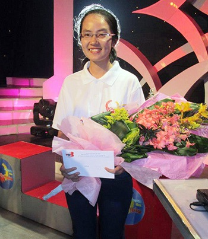

Chinh phục đam mê

Lần cập nhật cuối lúc Thứ ba, 27 Tháng 8 2013 13:38 Viết bởi Chiêu Thục Anh Thứ ba, 27 Tháng 8 2013 13:27
Báo Quảng Nam (số ra ngày 16.4.2013) từng có bài viết “Thủ lĩnh trẻ tương lai” nói về Phan Nguyễn Thu Sương, lúc đó là học sinh lớp 12 chuyên Anh trường THPT chuyên Nguyễn Bỉnh Khiêm. Thu Sương đã đạt số điểm 7.5 trong kỳ khảo sát Anh ngữ quốc tế IELTS. Kỳ tuyển sinh đại học năm nay, Sương được tuyển thẳng vào trường Đại học Ngoại thương TP.Hồ Chí Minh. Với Thu Sương, “đam mê không có điểm dừng”. Hãy nghe Sương nói về hành trình chinh phục ấy

Phan Nguyễn Thu Sương tham gia cuộc thi Đường lên đỉnh Olympia năm 2013.
Bén duyên ngoại ngữ
Mình đến với môn tiếng Anh thật tình cờ, hay đúng hơn là bén duyên! Ngày đó mình chưa thể định nghĩa đam mê hay phương pháp học tiếng Anh là gì ngoại trừ “cắm đầu” học từ vựng trên lớp rồi sau đó kiểm tra chéo cùng các bạn. Có thể nói đó là kiểu học tiếng Anh mà mỗi lần nhớ lại thấy sao mình “nhà quê” đến vậy! Và người đã mang đam mê ngoại ngữ cho mình chính là thầy giáo Nguyễn Ngọc Ân - người đã dìu dắt, khích lệ mình trong suốt 4 năm qua.
Còn nhớ, lần đầu tiên học tiếng Anh với thầy, mình bị ngợp nặng. Bạn như đứng trước một kho báu đầy hấp dẫn mà thầy giáo của bạn đang nắm câu thần chú giúp bạn mở cửa kho báu. Cái gì cũng mới lạ, cái gì cũng thú vị! Học với thầy, học sinh là người chủ động trình bày câu trả lời, thắc mắc và sau đó tự giải thích thắc mắc cho chính mình. Thầy chỉ đóng vai trò “cố vấn” và bổ sung những điều còn thiếu. Khi đó, bạn sẽ phải đầu tư vào bài tập khi ở nhà nhiều hơn, phải tra từ mới để hiểu rõ nghĩa, phải tự lý giải cho những lựa chọn mà mình đã đưa ra. Trên hết, chính không khí học tập đó đã khiến mỗi cá nhân có cơ hội thể hiện kiến thức của bản thân đồng thời trau dồi kỹ năng tư duy và diễn đạt vấn đề. Đòn bẩy để khơi dậy niềm đam mê thực sự với môn tiếng Anh của mình nằm ở đây.
Đam mê không có điểm dừng
Bất kỳ môn học nào cũng đòi hỏi một tư duy khoa học và môn tiếng Anh cũng không ngoại lệ. Con đường từ đam mê đến chinh phục môn tiếng Anh của mình dường như đã được rút ngắn nhờ vào những phương pháp đúng đắn. Thời gian đầu mình thật sự lúng túng. Cảm giác mình còn thiếu quá nhiều thứ, kỹ năng, trải nghiệm, kiến thức... Mình biết có nhiều bạn học sinh và cả sinh viên gặp khó khăn trong việc học ngoại ngữ và dễ dàng từ bỏ quyết tâm. Mình cũng từng trải qua rất nhiều lần nghĩ rằng “Chắc mình không có năng khiếu với môn này rồi!”. Nhất là dồn công sức viết bài luận nhưng bị thầy “bắt bài” ngây ngô ý tưởng. Rồi sau đó khi làm lại từ đầu, mình càng hạ quyết tâm hơn. Theo mình, bí quyết để học ngoại ngữ tốt nhất là phải tự phát hiện ra mình yếu chỗ nào và xác định được phương pháp cải thiện đúng đắn.
Trong 4 kỹ năng “nghe, nói, đọc, viết” thì viết và nói là khó nhất. Mình thấy có một phương pháp làm quen khá hiệu quả với nhiều trường hợp. Lúc nào cũng nghe hội thoại tiếng Anh để quen tai, quen từ dù không hiểu gì. Còn về kỹ năng đọc thì vô cùng thú vị! Tốt nhất là đi từ những bài học đơn giản và ngắn. Càng đọc sẽ càng thấy mê và có lẽ đây là kỹ năng thú vị nhất. Hình ảnh, con người, văn hóa, những câu chuyện thuộc đủ mọi lĩnh vực là nguồn cung cấp ý tưởng và kiến thức vô cùng phong phú. Cũng chính từ đó mà ý tưởng cho kỹ năng viết được hình thành. Từ bản thân mình nhìn thấy, học sinh ở thôn quê như chúng ta ít có trải nghiệm, vốn sống còn nghèo. Vì vậy phải từ kênh đọc để khỏa lấp những chỗ trống ấy. Từ chỗ có ý tưởng, chúng ta bắt đầu lắp ráp vào cái khung “nói” và “viết”. So với nhiều anh chị đi trước, con đường mình trải qua chưa thật sự có nhiều thành công hay bỏ nhiều công sức. Thế nhưng đối với bản thân và những người đã dõi theo, mình thấy đam mê của mình thật nhiều ý nghĩa. Bởi lẽ nó đã chứng kiến những sự thay đổi trong tư duy, trong cách thức và nỗ lực của bản thân.
| Phan Nguyễn Thu Sương có bề dày thành tích học tập đáng nể: giải Ba quốc gia môn tiếng Anh (năm học 2012 - 2013); thủ khoa cấp tỉnh kỳ thi tốt nghiệp THPT vừa qua; giải Nhất cấp tỉnh môn tiếng Anh 2 năm liền (2012, 2013); giải Nhất cấp tỉnh Cuộc thi thuyết trình văn học (2012 - 2013); danh hiệu “Gương mặt trẻ tiêu biểu tỉnh Quảng Nam” năm 2013; Huy chương Bạc cuộc thi Olympic 30.4 toàn miền Nam 2012; có 12 năm liền là học sinh xuất sắc; danh hiệu “Học sinh xuất sắc toàn trường THPT chuyên Nguyễn Bỉnh Khiêm” năm học 2012 - 2013, là “Học sinh danh dự toàn trường”; được tuyển thẳng vào trường Đại học Ngoại thương TP.Hồ Chí Minh. |
Chặng đường phía trước
Đối với những người học một ngôn ngữ, dường như không có điểm kết thúc. Kết quả khảo sát Anh ngữ quốc tế IELTS ở mức 7.5 mình đạt được giống như một tấm vé thông hành. Cái đích để chinh phục dường như vẫn còn ẩn hiện đâu đó ở phía trước. Mình tin, bất kỳ ai có đam mê cũng sẽ làm được. May mắn của mình chính là sự đồng hành của thầy cô, gia đình và bạn bè - những người luôn ủng hộ cho con đường phía trước của mình, mình tin thế...
(Theo http://baoquangnam.com.vn)
itnbk.edu.vn- itnbk.edu.vn
- 13/09/2013 14:23 - Khai mạc giải Việt dã truyền thống Báo Quảng Nam m…
- 09/09/2013 08:41 - Ngành Giáo dục Quảng Nam tưng bừng khai giảng năm …
- 05/09/2013 22:12 - Dự lễ khai giảng năm học mới, Bí thư Tỉnh ủy Nguyễ…
- 04/09/2013 06:53 - Phan Thế Hoàng - gương mặt tài năng
- 28/08/2013 09:52 - Những thầy thuốc tương lai
- itnbk.edu.vn
- 26/08/2013 15:10 - 45 mô hình, sản phẩm đạt giải Cuộc thi sáng tạo th…
- 23/08/2013 14:23 - Nữ sinh xứ Quảng vinh danh tại ĐH Harvard
- 23/08/2013 09:40 - Chị em Hiền - Hòa
- 23/08/2013 09:33 - Cho những ngày sau
- 17/04/2013 09:21 - Thủ lĩnh trẻ tương lai